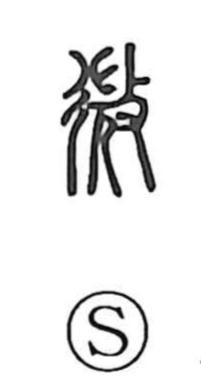

微

Uncategorized
Kun: kasuka, hisoka | On: bi
slight ・ minute ・ faint ・ secret
Explanation
Shirakawa sees 微 as a picto-phonetic graph grounded in a ritual scene. The old form shows a long-haired female shaman, to whom the striking hand (攴) is applied, depicting the counter-magic of beating enemy priestesses to break and dispel their power. With 彳—the left half of 行 that evokes a crossroads—added, the rite is situated on the roadway where it was performed. From the core sense of driving off and weakening opposing magic, the character comes to mean to diminish or weaken, and then naturally extends to faint, slight, and by extension secret. It is allied with 蔑, which portrays seizing and killing an enemy shaman to strip her of power; both graphs memorialize related magical actions.